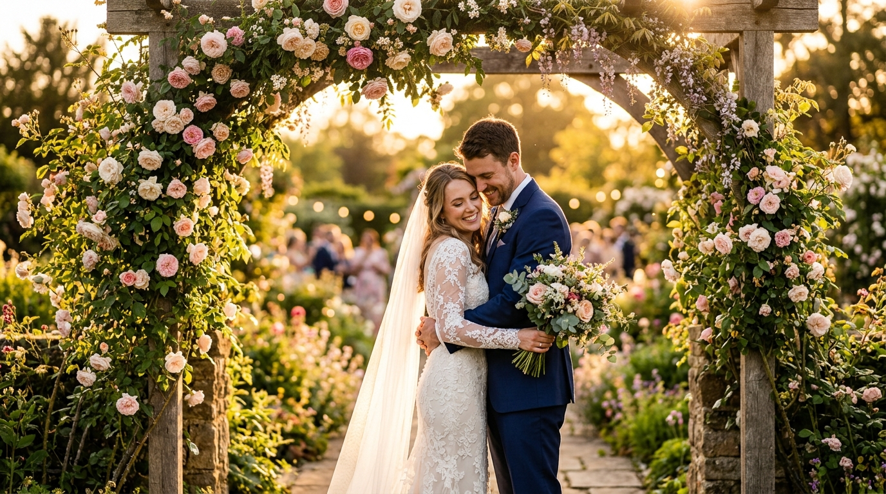

Spotlighted
Featured Photographers
Hand-picked talent with exceptional portfolios and outstanding client reviews.


Marcus Reid
Wedding & Portrait
New York, NY

Sophia Lane
Fashion & Editorial
Los Angeles, CA

Priya Sharma
Food & Product
Chicago, IL